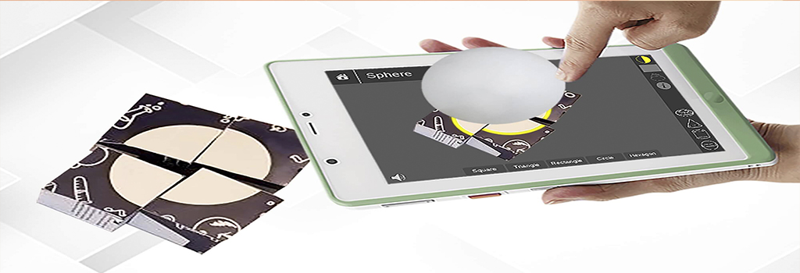
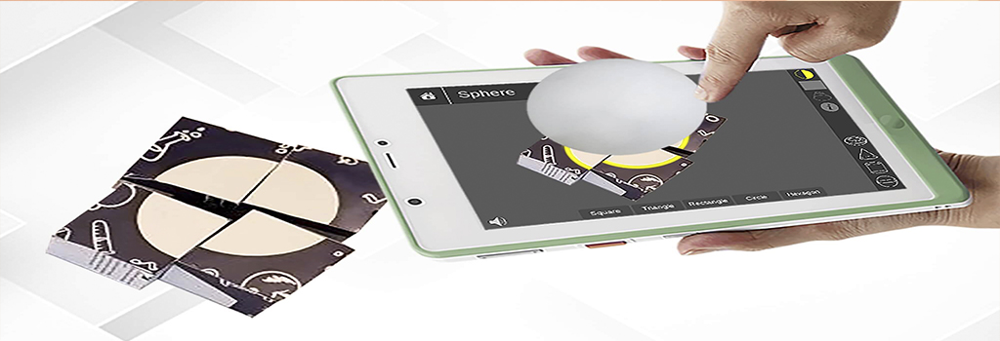

الأهداف
يهدف البرنامج المقترح إلي :
- إرشاد معلم الدراسات الاجتماعية إلى استخدام تقنية الواقع المعزز في تدريس مقرر الدراسات الاجتماعية وتنمية مهارات الفهم العميق والشغف الرقمي لدى تلاميذ الصف الخامس الابتدائي والتي يعد إتقانها متطلباً في مختلف المجالات.
- تشكيل بيئة تعليمية ثرية قائمة على تقنية الواقع المعزز، الذي يجعل التلميذ محور العملية التعليمية ومشاركاً نشطاً في عملية التعليم والتعلم، من خلال إثارة التساؤلات وبعض استراتيجيات التدريس.
- مساعدة معلم الدراسات الاجدتماعية على القيام بالأدوار المطلوبة منه، لتحقيق أهداف الوحدة.
...
- توجيه كل من المعلم / المتعلم الى استخدام وسائل تعليمية متعددة في التعليم من خلال الفيس بوك البريد الالكتروني- المكتبة والمدونه- تطبيق الواقع المعزز باستخدام الهاتف.
- مساعدة المعلم على باستخدام أسلوب تدريسي جديد يتفق مع طبيعة مادة الدراسات الاجتماعية من حيث الصعوبة والتجريد، ومواكبة التطورات الحجديثة والتكنولوجية في مجال المناهج وطرق التدريس.
- تحقيق مجموعة من النتاجات السلوكية المرغوبة لدى التلاميذ أثناء تفاعلهم مع الدروس والتي تساعد في تنمية مهارات الفهم العميق والشغف الرقمي.
الدروس
يتضمن المحتوى التعليمي الدروس التالية
دولة الكويت وعلاقتها الخارجية
- الكويت ومجلس التعاون الخليجي.
- دول أعضاء مجلس التعاون الخليجي.
- الروابط المشتركة بين دول مجلس التعاون الخليجي.
- إنجازات مجلس التعاون الخليجي.
تاريخ
- .